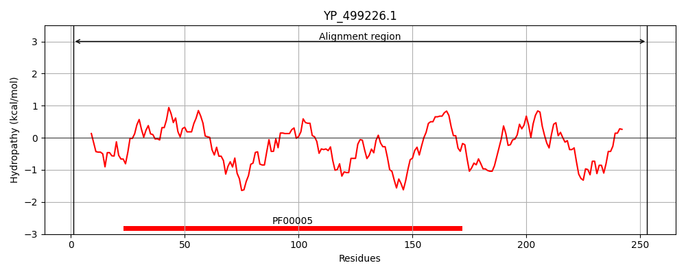
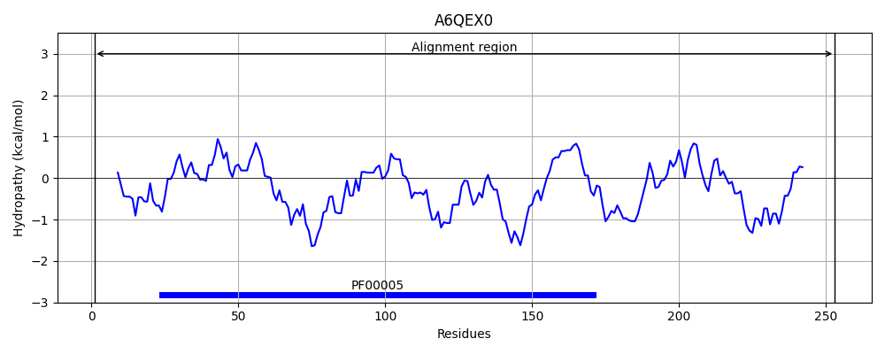
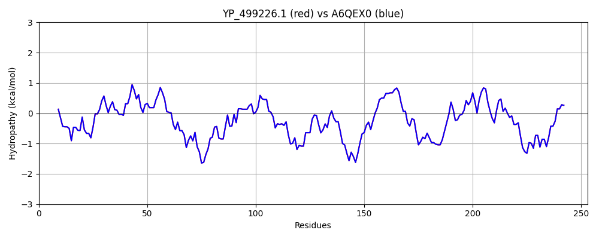

Hit Accession: A6QEX0
Hit TCID: 3.A.1.134.7
Hit Description: gnl|BL_ORD_ID|623 gnl|TC-DB|A6QEX0|3.A.1.134.7 ABC transporter ATP-binding protein VraF OS=Staphylococcus aureus (strain Newman) GN=vraF PE=4 SV=1
Mach Len: 253
e:0.000000
Query TMS Count : 0
Hit TMS Count: 0
TMS-Overlap Score: 0.000000
Predicted Substrates:None
BLAST Alignment:
Score: 1260 , Bit scores: 489 bits, E-value: 2.1e-178, Alignment length: 253, Percentage identity: 100
Query: 1 MAILEVKQLTKIYGTKKMAQEVLRDINMSIEEGEFIAIMGPSGSGKTTLLNVLSSIDYISQGSITLKGKKLEKLSNKELSDIRKHDIGFIFQEYNLLHTLTVKENIMLPLTVQKLDKEHMLNRYEKVAEALNILDISDKYPSELSGGQRQRTSAARAFITLPSIIFADEPTGALDSKSTQDLLKRLTRMNEAFKSTIIMVTHDPVAASYANRVVMLKDGQIFTELYQGDDDKHTFFKEIIRVQSVLGGVNYDL 253
MAILEVKQLTKIYGTKKMAQEVLRDINMSIEEGEFIAIMGPSGSGKTTLLNVLSSIDYISQGSITLKGKKLEKLSNKELSDIRKHDIGFIFQEYNLLHTLTVKENIMLPLTVQKLDKEHMLNRYEKVAEALNILDISDKYPSELSGGQRQRTSAARAFITLPSIIFADEPTGALDSKSTQDLLKRLTRMNEAFKSTIIMVTHDPVAASYANRVVMLKDGQIFTELYQGDDDKHTFFKEIIRVQSVLGGVNYDL
Sbjct: 1 MAILEVKQLTKIYGTKKMAQEVLRDINMSIEEGEFIAIMGPSGSGKTTLLNVLSSIDYISQGSITLKGKKLEKLSNKELSDIRKHDIGFIFQEYNLLHTLTVKENIMLPLTVQKLDKEHMLNRYEKVAEALNILDISDKYPSELSGGQRQRTSAARAFITLPSIIFADEPTGALDSKSTQDLLKRLTRMNEAFKSTIIMVTHDPVAASYANRVVMLKDGQIFTELYQGDDDKHTFFKEIIRVQSVLGGVNYDL 253 | Protein Hydropathy Plots: |
|---|
|  |  |
Pairwise Alignment-Hydropathy Plot:
|
|---|
|  |